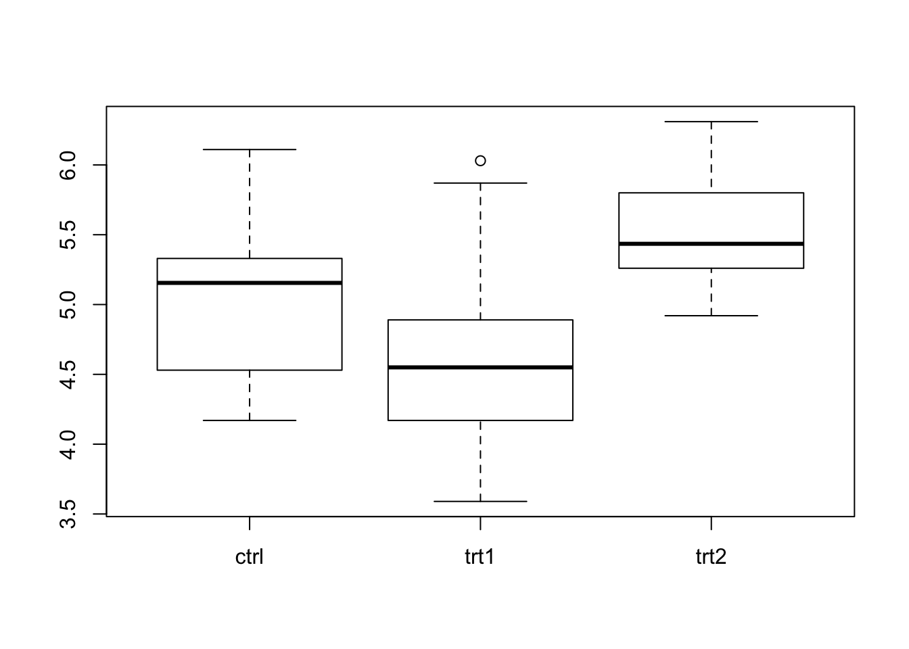
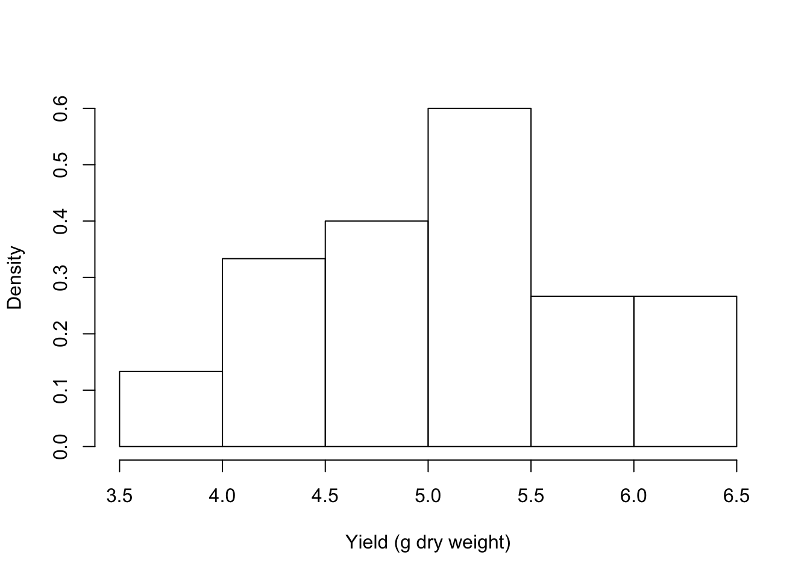
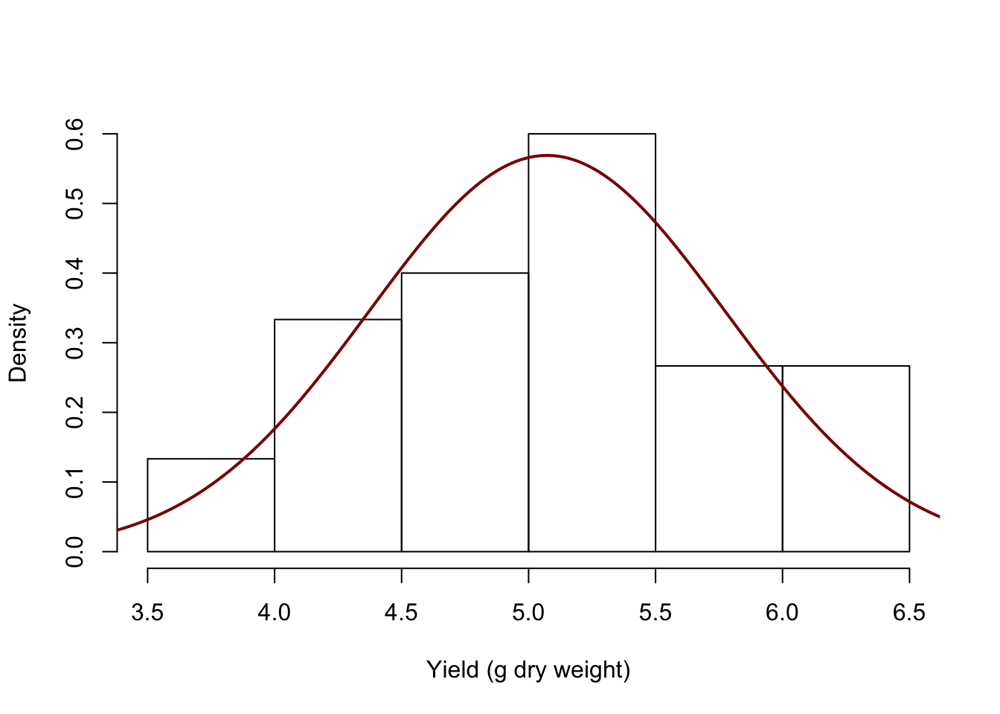
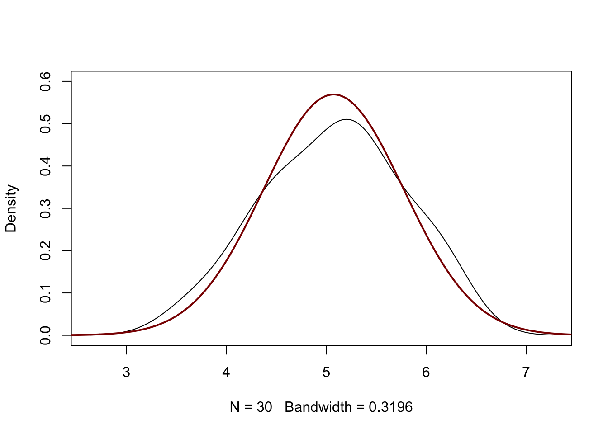
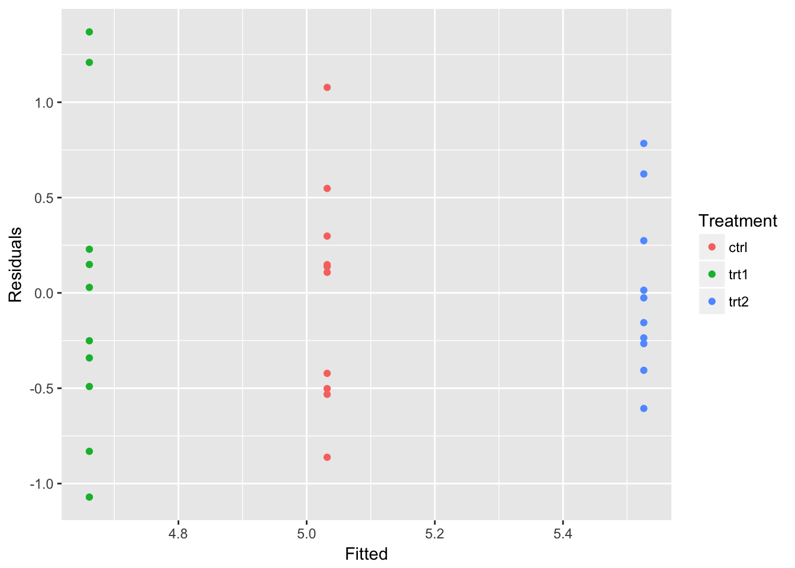
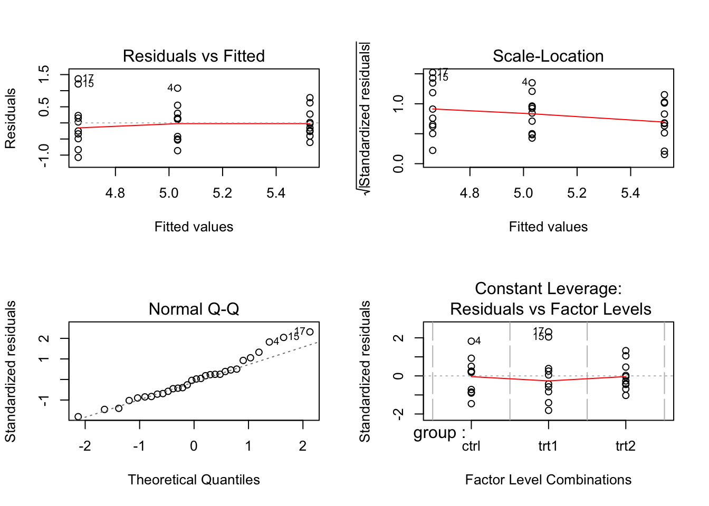

2.4 Applying statistical tests on Dataframes
2.4.1 Intro
The t-test (or Student’s t-test) is one of the most used statistical tests. It can help determine whether the means of two samples are differing significantly. This form is the two-sample t-test. In its alternative form, you can compare a single sample to an expected (population) mean (one-sample t-test). An important assumption of the test is that the data follow a normal (Gaussian) distribution (that is why the t-test is one of the parametric tests). If this is not the case (or if you simply don’t want to test for or assume normality), you can use the non-parametric t-test counterpart, the Mann-Whitney U Test. If more that two groups are involved, ANOVA is your go-to guy.
To investigate the application of these statistical tests on dataframes, we’ll use the built-in dataset called PlantGrowth. This dataset shows the yield of a certain plant species under three different conditions (control and two treatments).
My initial scientific question is “Is there a difference between the yields under these different conditions?”. My null hypothesis H0 would therefore be “There is no difference in yield”.
2.4.2 Data exploration
Of course, you always visually inspect your data before embarking on a statistical-testing quest:

This plot indicates that the distributions of ctrl and trt1 are quite close, and that trt2 differs from the others.
The t-test and ANOVA assume normality. Normality can be roughly assessed from boxplots (as in the figure above - do you know how?), but histograms and density curves are better suited for this purpose. Let’s create a histogram.

That looks pretty “normal” doesn’t it? Adding a real normal curve usually helps a lot:
x <- seq(0,20,0.005)
m <- mean(PlantGrowth$weight)
weight.sd <- sd(PlantGrowth$weight)
hist(PlantGrowth$weight,
prob=TRUE,
main = NA,
xlab="Yield (g dry weight)")
lines(x, dnorm(x, mean=m, sd=weight.sd), col="darkred", lwd=2)
Alternatively, you can plot the density curve of the data and add the normal distribution.
plot(density(PlantGrowth$weight), main = NA, ylim = c(0, 0.6))
lines(x, dnorm(x, mean=m, sd=weight.sd), col="darkred", lwd=2)
OK, conclusion: it looks like a normal distribution, albeit not a perfect one. Let’s proceed for now.
2.4.3 The t-test
Since t-tests are designed for comparing at most 2 groups, we’ll compare the two groups that are most alike in yield distribution: ctrl and trt1.
test.result <- t.test(x = PlantGrowth$weight[PlantGrowth$group == "ctrl"],
y = PlantGrowth$weight[PlantGrowth$group == "trt1"])
test.result##
## Welch Two Sample t-test
##
## data: PlantGrowth$weight[PlantGrowth$group == "ctrl"] and PlantGrowth$weight[PlantGrowth$group == "trt1"]
## t = 1.1913, df = 16.524, p-value = 0.2504
## alternative hypothesis: true difference in means is not equal to 0
## 95 percent confidence interval:
## -0.2875162 1.0295162
## sample estimates:
## mean of x mean of y
## 5.032 4.661It’s as simple as that! To extract the p-value (or any other attribute), use the dollar operator:
## [1] 0.2503825
## [1] -0.2875162 1.0295162
## attr(,"conf.level")
## [1] 0.95As you can see, the p-value is 0.250, well above the usual cutoff of 5% (0.05). Therefore, we can conclude that the yields do not differ significantly between the control and treatment 1 plants (and accept the null hypothesis).
Comparing control versus treatment 2 gives
test.result2 <- t.test(x = PlantGrowth$weight[PlantGrowth$group == "ctrl"],
y = PlantGrowth$weight[PlantGrowth$group == "trt2"])
test.result2##
## Welch Two Sample t-test
##
## data: PlantGrowth$weight[PlantGrowth$group == "ctrl"] and PlantGrowth$weight[PlantGrowth$group == "trt2"]
## t = -2.134, df = 16.786, p-value = 0.0479
## alternative hypothesis: true difference in means is not equal to 0
## 95 percent confidence interval:
## -0.98287213 -0.00512787
## sample estimates:
## mean of x mean of y
## 5.032 5.526And this p-value indicates there may be a statistically relevant effect of treatment 2 (p-value = 0.0478993, just below the 5% cutoff).
Now, let’s extend this to the situation where you want to apply a t-test over the rows of a dataframe, for example when you have a dataframe holding expression values of genes (rows) in two groups of samples (columns).
Here is a very simple dataframe to explore this scenario. Columns a through d represent measurements for condition A (e.g. the control group) and e through h condition B (e.g. treatment with a novel drug).
gene.expr <- data.frame(a = c(20, 34, 24, 51),
b = c(21, 32, 27, 45),
c = c(17, 26, 21, 49),
d = c(18, 28, 28, 53),
e = c(22, 33, 29, 44),
f = c(16, 34, 26, 42),
g = c(19, 31, 31, 41),
h = c(20, 28, 30, 43))
rownames(gene.expr) <- c("SRSSHT", "GeNPL-1", "DUNNO", "WHTVR")
controls <- c("a", "b", "c", "d")
treatment <- c("e", "f", "g", "h")
##have a look
gene.expr## a b c d e f g h
## SRSSHT 20 21 17 18 22 16 19 20
## GeNPL-1 34 32 26 28 33 34 31 28
## DUNNO 24 27 21 28 29 26 31 30
## WHTVR 51 45 49 53 44 42 41 43I am only interested in the p-value to be able to select the most interesting genes. Here is a custom function to extract this from a row of my dataframe.
and now the t-test applied over the rows
## SRSSHT GeNPL-1 DUNNO WHTVR
## 0.87746477 0.53288953 0.08786967 0.02001060As you can see, only one gene in this example meets the standard 95% p value cutoff: WHTVR.
(NB: of course, no multiple testing corrections has been applied here - that is out of scope for this use case).
2.4.4 ANOVA
The technique (one-way) Analysis of Variance (ANOVA) is an extension of the two-sample t test for independent groups covering situations where there are more than two groups being compared. In one-way ANOVA the data is sub-divided into groups based on a single classification factor.
Before an ANOVA can be carried out, it has to be determined that the variances for all factors are equal. You cann do this using the bartlett.test function:
##
## Bartlett test of homogeneity of variances
##
## data: weight by group
## Bartlett's K-squared = 2.8786, df = 2, p-value = 0.2371From the output we can see that the p-value of 0.2371 is not less than the significance level of 0.05. This means we cannot reject the null hypothesis that the variance is the same for all treatment groups. This means that there is no evidence to suggest that the variance in plant growth is different for the three treatment groups.
In this example, we will analyse all three groups of the PlantGrowth dataset together. To investigate the differences between these groups, we fit the one-way ANOVA model using the lm function:
Then, using the summary function, have a look at the parameter estimates and standard errors for the treatment effects:
##
## Call:
## lm(formula = weight ~ group, data = PlantGrowth)
##
## Residuals:
## Min 1Q Median 3Q Max
## -1.0710 -0.4180 -0.0060 0.2627 1.3690
##
## Coefficients:
## Estimate Std. Error t value Pr(>|t|)
## (Intercept) 5.0320 0.1971 25.527 <2e-16 ***
## grouptrt1 -0.3710 0.2788 -1.331 0.1944
## grouptrt2 0.4940 0.2788 1.772 0.0877 .
## ---
## Signif. codes: 0 '***' 0.001 '**' 0.01 '*' 0.05 '.' 0.1 ' ' 1
##
## Residual standard error: 0.6234 on 27 degrees of freedom
## Multiple R-squared: 0.2641, Adjusted R-squared: 0.2096
## F-statistic: 4.846 on 2 and 27 DF, p-value: 0.01591The model output indicates some evidence of a difference in the average growth for the 2nd treatment compared to the control group. An analysis of variance (ANOVA) table for this model can be produced via the anova command (passing the linear model object):
## Analysis of Variance Table
##
## Response: weight
## Df Sum Sq Mean Sq F value Pr(>F)
## group 2 3.7663 1.8832 4.8461 0.01591 *
## Residuals 27 10.4921 0.3886
## ---
## Signif. codes: 0 '***' 0.001 '**' 0.01 '*' 0.05 '.' 0.1 ' ' 1This table confirms that there are differences between the groups which were highlighted in the model summary. The function confint is used to calculate confidence intervals on the treatment parameters, by default 95% confidence intervals:
## 2.5 % 97.5 %
## (Intercept) 4.62752600 5.4364740
## grouptrt1 -0.94301261 0.2010126
## grouptrt2 -0.07801261 1.0660126The model residuals can be plotted against the fitted values to investigate the model assumptions. First we create a data frame with the fitted values, residuals and treatment identifiers:
plant.mod = data.frame(Fitted = fitted(yield.lm),
Residuals = resid(yield.lm), Treatment = PlantGrowth$group)and then produce the plot:

We can see that there is no major problem with the diagnostic plot but some evidence of different variabilities in the spread of the residuals for the three treatment groups.
ALTERNATIVELY, WE COULD HAVE DONE THIS: 1: fit a model
## Call:
## aov(formula = weight ~ group, data = PlantGrowth)
##
## Terms:
## group Residuals
## Sum of Squares 3.76634 10.49209
## Deg. of Freedom 2 27
##
## Residual standard error: 0.6233746
## Estimated effects may be unbalanced2: diagnostic plots Diagnostic plots provide checks for heteroscedasticity, normality, and influential observerations.

3: evaluate model effects
## Df Sum Sq Mean Sq F value Pr(>F)
## group 2 3.766 1.8832 4.846 0.0159 *
## Residuals 27 10.492 0.3886
## ---
## Signif. codes: 0 '***' 0.001 '**' 0.01 '*' 0.05 '.' 0.1 ' ' 1## Single term deletions
##
## Model:
## weight ~ group
## Df Sum of Sq RSS AIC F value Pr(>F)
## <none> 10.492 -25.517
## group 2 3.7663 14.258 -20.316 4.8461 0.01591 *
## ---
## Signif. codes: 0 '***' 0.001 '**' 0.01 '*' 0.05 '.' 0.1 ' ' 1Now suppose we want to apply this to a dataframe of gene expression values, as shown before in the example of the t-test, but now with three instead of two groups:
gene.expr2 <- data.frame(a = c(20, 34, 24, 51),
b = c(21, 32, 27, 45),
c = c(17, 26, 21, 49),
d = c(18, 28, 28, 53),
e = c(22, 33, 29, 44),
f = c(16, 34, 26, 42),
g = c(19, 31, 31, 41),
h = c(20, 28, 30, 43),
i = c(20, 32, 22, 50),
j = c(18, 33, 21, 52),
k = c(21, 29, 19, 51),
l = c(22, 27, 23, 54))
rownames(gene.expr2) <- c("SRSSHT", "GeNPL-1", "DUNNO", "WHTVR")
controls <- c("a", "b", "c", "d")
treatment1 <- c("e", "f", "g", "h")
treatment2 <- c("i", "j", "k", "l")
##have a look
gene.expr2## a b c d e f g h i j k l
## SRSSHT 20 21 17 18 22 16 19 20 20 18 21 22
## GeNPL-1 34 32 26 28 33 34 31 28 32 33 29 27
## DUNNO 24 27 21 28 29 26 31 30 22 21 19 23
## WHTVR 51 45 49 53 44 42 41 43 50 52 51 54We need to apply anova to each row and extract the p-value. First, we need the custom function to apply with:
my.anova <- function(x) {
#define factor
gr.factor <- factor(rep(x = c("control", "treatment1", "treatment2"), each = 4))
#perform anova
my.oav <- aov(formula = expr ~ group,
data = data.frame(expr = x, group = gr.factor))
#return p-value
summary(my.oav)[[1]]$'Pr(>F)'[1]
}Now, it’s a simple apply call again:
## SRSSHT GeNPL-1 DUNNO WHTVR
## 0.6692884795 0.7638487821 0.0047833839 0.0008448382These results indicate a significant effect in genes DUNNO and WHTVR (again, without having applied multiple testing correction!). The next step would be to investigate the effect size (if anything significant has been found). This can be carried out using Tukeys HSD.